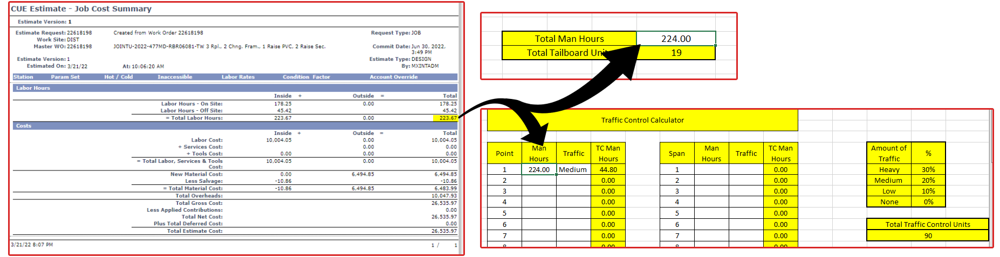
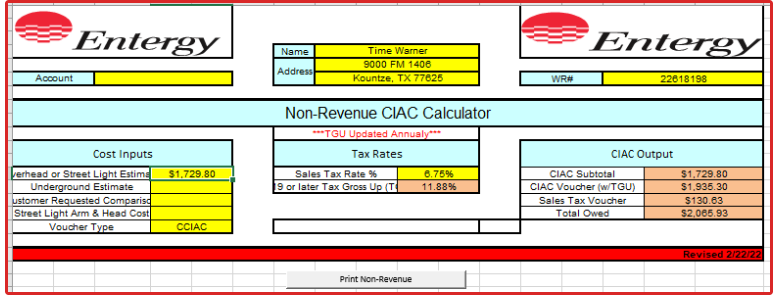
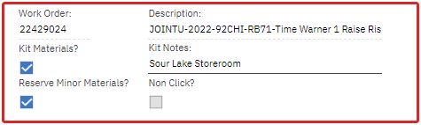
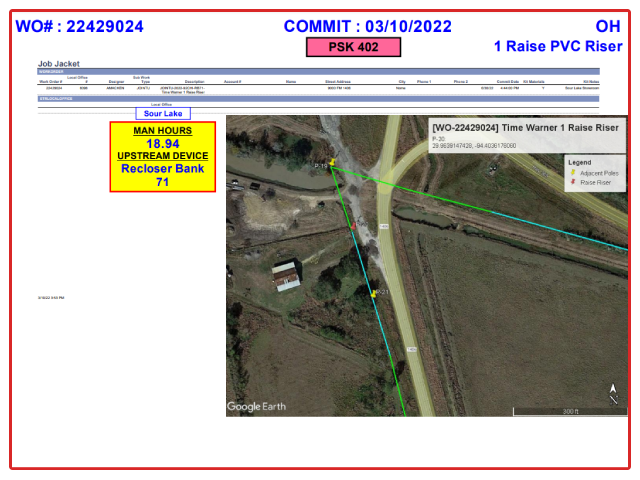
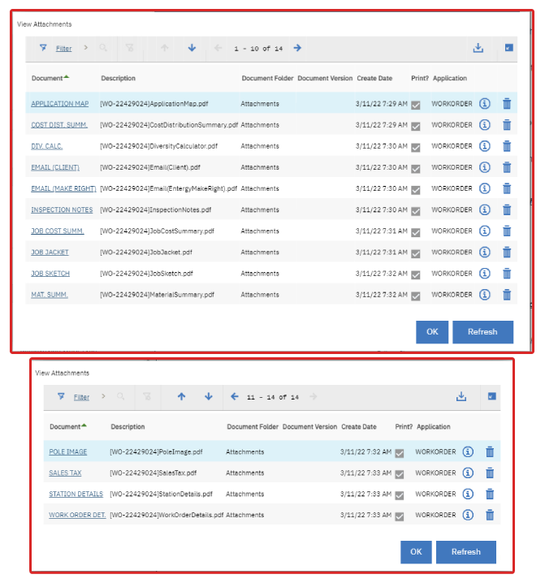

Once your design is complete within GDT, head to the 'Object Editor' tab and click the 'Specials' → 'Set Crew Workgroup.' A new window should appear. Select the appropriate workgroup for your specific project.
Click the 'Navigator' tab and select your WO. Press 'Send Design' to send your design to Maximo. (Note: Changes made within Maximo will not affect your project inside GDT.)
In the Corporate Desktop, open the Maximo homepage and navigate to your WO.
Confirm that the GDT design was successfully transferred to Maximo by checking the Stations within the 'Plans' tab.
Generating Tailboard and Traffic Control Units
In the 'Plans' tab, select 'CU Estimate Request', and then select 'Run Estimations' from the left-side ribbon. Enter your WO and Revision number.
After Estimations are complete, select 'Run Reports' → 'Job Cost Summary'.
Open the calculator and navigate to the 'Tailboard' tab. Round up the total man-hours value from the Job Cost Summary and copy it into the calculator's field.
Navigate to the 'Traffic Control' tab. Copy the same value used for the Tailboard into the calculator's field. Set the traffic percentage to the appropriate level using an educated guess based on where the pole is located. (Note: For most cases, all man-hours can simply be placed into 'Point 1.'')
[Click to Display Example 👇]

Navigate back to Maximo within the Corporate Desktop. And update the Tailboard and Traffic Control quantities for your project. Be sure to press save and check all Tailboard/Traffic quantities are accurate. (Note: Values can be updated within the GDT design, but design must be sent once again in order for the changes to populate within Maximo.
Re-run your estimations and re-run your 'Job Cost Summary' report. Use this updated version of the report moving forward.
Diversity Calculator and New Eng & Supr Cost Sheet
Navigate to the 'New Eng & Supr Cost' Excel sheet.
[Click to view File Path 👇]
[add file path]
Paste the 'Project Name', 'WO#', 'Line Voltage', and '# Of Poles' into Columns A-D.
Paste the 'Total Estimate Cost', 'Total Labor Cost', and 'Total Material Cost' from your 'Job Cost Summary' into Columns E-G.
Columns H & I should then auto populate. Open your Diversity Calculator sheet.
Copy and paste Column I of the 'New Eng & Supr Cost' sheet into the 'Overhead or Streetlight Estimate' field of the Diversity Calculator.
Use Sales Tax Rate Locator webpage to generate an accurate sales tax for the project's location.
Copy and paste the given 'Total Tax Rate' as a percentage into the 'Sales Tax Rate %' field of the Calculator.
Export a PDF copy of the Sales Tax webpage into your project's folder. You may now close the Sales Tax webpage.
Paste the 'Client Name', 'Project Address', and 'WO#' into the 'Name', 'Address', and 'WR#' fields of the Calculator respectively.
The 'CIAC Output' section should auto-populate with the required values. Copy and paste the 'Total Owed' from the Diversity Calculator into Column J of the 'New Eng & Supr Cost' sheet.
Save your Diversity Calculator excel sheet to your Originals Folder and export a PDF copy of the Diversity Calculator into your project's folder.
[Click to Display Example 👇]

Save and close the 'New Engr & Supr Cost' sheet.
Final Report Generation
With your WO open in Maximo, navigate back to the 'Plans' tab.
Check the 'Kit Materials?' and 'Reserve Minor Materials?' options. In the 'Kit Notes' type in '[COUNTY OF PROJECT] Storeroom.'
[Click to Display Example 👇]

Navigate to the 'CU Estimate Request' page.
In the 'Versions' tab, change 'Contribution Method' from 'N' to 'A'. Copy and paste the value in Column J of the 'New Engr' sheet into the 'Amount' field.
Change 'Apply Contributions'
Click 'Propogate Changes' then press save.
Exit the 'CU Estimate Request' page by pressing 'return' in the top right corner. Navigate to the 'LOGS' tab.
Add a 'New Row'. In the 'Description' field, type in 'P&N'.
In the 'Long Description' field, type in a summary of the costs and context behind the project.
[Click to show Example P&N 👇]
"The purpose of this project is to Provide a Make Ready work estimate for [CLIENT NAME] for a Joint Use project to install communication fiber on [X] Entergy-owned pole(s). The work that is required on this estimate will consist of [...REPLACING X POLES, RAISING X DRIP LOOP, ETC]. This work is done in order to obtain the required clearances between the proposed communication cables and Entergy facilities, as well as NESC required clearances over [ROADS/DRIVEWAYS/GROUND] along [LOCATION]
The cost of this project is $[CIAC SUBTOTAL] plus a TGU cost of $[((CIAC VOUCHER W/TGU)-(CIAC SUBTOTAL))] and Sales Tax of $[SALES TAX VOUCHER] for a total cost of $[TOTAL OWED] to be paid by [CLIENT NAME] This project is value engineered by [YOUR NAME]"
Add a 'New Row'. In the 'Description' field, type in 'Work Description'.
In the 'Long Description' field, type in a basic description of the work being done.
[Click to show Example Work Description 👇]
"[...REPLACING X POLES, RAISING X DRIP LOOP, ETC] to obtain enough space to meet proper clearances between the proposed communication cables and Entergy facilities, as well as meet required NESC clearances over the drivevway."
Navigate back to 'Plans' → 'CU Estimate Request'. Press the 'Perform Estimation' button once again.
-------- Once estimations are complete, run the following reports and save them to your project's folder:
CUE Cost Distribution Summary
CUE Job Cost Summary
CUE Material Summary
CUE Station Detail & Job Instruction
Navigate to the 'Logs' tab. Run following reports and save them to your project's folder:
Work Order Details
Job Jacket (Note: Select the second 'Job Jacket' that appears within the search query')
--------
Update the Job Jacket to display the WO#, Commit Date, OH/UG, Short Description, Local Office, Man Hours, Upstream Device, and KMZ image.
[Click to Display Example 👇]

On the 'Work Order Page', click on the Paper Clip → 'Add New Attachments' → 'Add New File.'
Upload all relevant files to the project. This includes the generated reports, client and Make Right emails, inspection notes, Poleforeman Reports etc.
[Click to Display Example List of Attachments 👇]

Set the 'Approver' to 'CCRISMA.'
Press the 'Route Workflow' button and set the job to WAPPR.
Send an email to Katie (CCRISMA@Entergy.com) to let them know that you have sent the project for approvals. Be sure to follow up with them regularly if there is no change in its status.
Update the planner and add a comment stating the job is now in WAPPR.
Congrats! Your project is now complete!
FAQ
If you believe there are changes that must be made, or if you have any suggestions/contributions you would like to make, please reach out at amackenzie@msengr.com